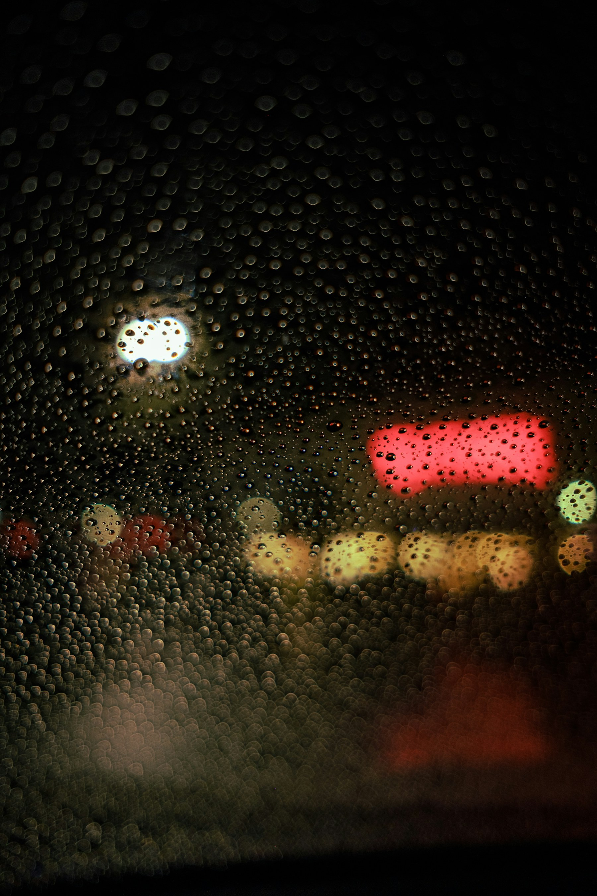

01 / The setting
A Seattle wedding
rain plan.
Choose an indoor space you like, agree on when to make the weather call, and plan the walks between rooms.
By Alex Claudio Photography
Before you spend time choosing umbrellas, choose where you would be happy to get married if it rains.
Then work out where portraits will happen and how everyone will get there. Plan for rain through the whole day, with outdoor photographs as an option if conditions allow. You can stop rebuilding the schedule with every forecast.
Part 1 of 2
Choose your spaces
Visit the indoor ceremony setup
Ask to see the backup arrangement during your venue visit. An empty room can look generous until you add chairs, an aisle, musicians, and flowers.
Stand where you would exchange vows. Look toward the windows and guests. Ask when the room becomes available, especially if another part of the wedding happens there first.
- Can it hold the full guest list comfortably?
- Which flowers and decorations can move inside?
- What rental or setup costs would be added?
- If the room changes from ceremony to dinner, where do guests go during the change?
- Can guests who need step-free access reach each space?
Ask your photographer to review the room too. A spot that works for a portrait of the two of you may be too tight for your family group.
Confirm a place for portraits
Choose a portrait space for the two of you and, if needed, a larger one for family photographs. Check the background, access, and whether staff will be setting up during your portrait time.
A covered entrance may also be the delivery route. A hotel lobby may welcome visitors but require permission for a photography session. Confirm access before putting either on the schedule.
For public locations, check the Seattle Parks photography permit requirements for your location and intended use. An approved space at your venue can spare you a separate journey in the rain.
Part 2 of 2
Agree on the day’s decisions
Set two weather decisions
Your venue may need an early answer so staff can arrange seating and rentals. Outdoor portraits can often be decided closer to the time. Agree on each decision separately.
Write down the venue’s deadline and who makes the ceremony call. Then tell your photographer whether you would enjoy a short walk in light rain or prefer to stay indoors.
Ask your planner or venue coordinator to update the florist, musicians, transport team, and photographers. You should not have to pass the same message around while getting ready.
Check the forecast for your venue and hours
A 40% chance of rain does not mean it will rain for 40% of the day. The National Weather Service defines it as the chance of measurable precipitation at a particular point during a specified period.
Look at timing, expected rainfall, and wind for the venue. Review those details with your team at the agreed check-in, keeping any earlier venue deadline in mind.
Plan the short walks
The route from the suite to the ceremony still counts, even if it is only a few minutes. Keep suitable shoes, a towel, an extra layer, and touch-up supplies in one accessible bag. Confirm who brings umbrellas and where they will be kept.
Arrange help with a train or veil if needed. Tell your team what must stay dry, and check where guests can leave wet coats without blocking an entrance. Leave time to get settled after outdoor portraits.
Share one page with your team
Before the wedding, send your team the ceremony decision deadline, the person responsible, confirmed portrait spaces, guest routes, accessibility needs, and who brings the supplies. Include your preference about outdoor portraits.
Send us your date and venue, and we can discuss where photography fits into both versions of your day.